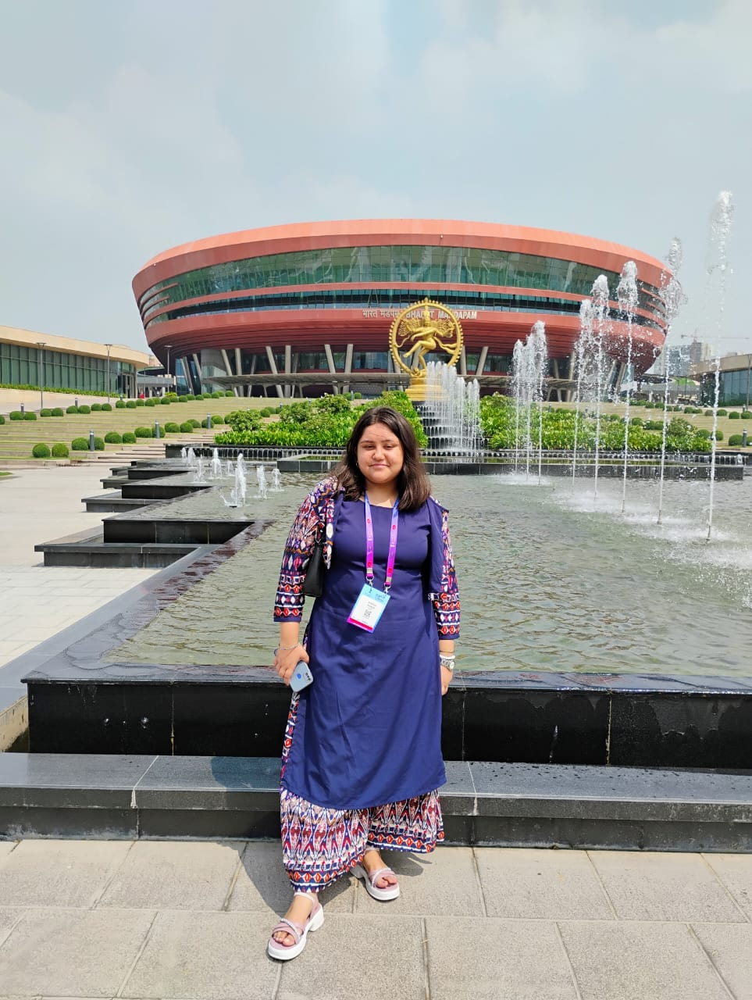

Hello! I'm Antriksha Nautiyal, a passionate and skilled developer enthusiastic about AI, Blockchain, Full Stack Web Development, and more. Explore my work, achievements, and experience through this animated portfolio.
I am Antriksha Nautiyal, a third-year engineering student pursuing Computer Science Engineering from Dr. A. P. J. Abdul Kalam Technical University. I aspire to become a successful and experienced software developer in the future through the technical knowledge provided to me by all the knowledgeable people I see as inspiration. I wish to develop expertise in the field of software which makes me want to be a part of the skillful and innovative world we all want to be part of. I also hope to be an inspiration for others and make a difference in society. When I am not thinking about technical stuff, I read lots of novels and journal too! Apart from this, I am way too interested in theatre. I am here to build a stronger network with people who share the same interests and grab some opportunities that would strengthen both my mind and my resume. Looking forward to connecting with everyone around!
I am a passionate Computer Science student specializing in AI, Full Stack Development, and Cybersecurity. I have a strong foundation in algorithms, data structures, and system design. My expertise spans across backend technologies like Node.js and Express.js, along with frontend frameworks like React.js. I am always exploring new advancements in AI, blockchain, and cloud computing.
I thrive in problem-solving environments and enjoy working on projects that have real-world impact. My experience includes leading teams in hackathons, participating in research, and contributing to open-source projects. I also served as the Marketing Head of Aarohan (DGI Coding Society) and was a Student Council member at Salwan Public School, showcasing my leadership and communication skills.
Low Power Efficient Task Allocation In Wireless Sensor Networks - Published in SCOPUS under ICOTET-2024.
The research focuses on optimizing task distribution in wireless sensor networks to improve power efficiency and extend network lifespan. By implementing a machine learning-based algorithm, the proposed method reduces energy consumption by 30% compared to conventional approaches. This work is particularly useful in smart cities and IoT-driven applications.
If you'd like to collaborate or reach out for any opportunities, feel free to connect!